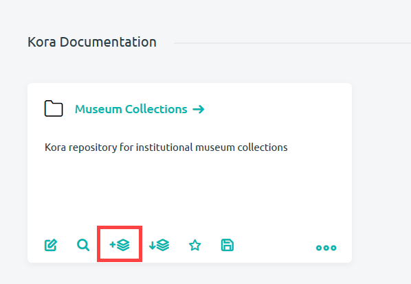

Accessing and Managing Projects from the Dashboard
Your dashboard is a versatile hub that can be customized to contain important interactive blocks for your projects, forms and records. The project block, in particular, makes it easy to access the main page of projects that you work with regularly. It also makes the performing of certain Kora actions for projects, just one click away. What follows is a description of how to use project blocks from your dashboard to manage a project.
The Project Block
A project block within your dashboard will contain the name of a project and its description. Click on your project name to access that project's main Project page
Below the project name and description are the Quick Action icons. The functions of these Quick Action icons are summarized below then linked to relevant documentation. For instructions on how to reorder your Quick Actions*, see the documentation on working with the dashboard.
Project Quick Actions
This section lists the types of Quick Actions available to the project block, gives a short description, and provides a link to any further documentation. There are 9 *Quick Action options available for a project block:
-
Edit Project: Brings you to the Edit Project page where you can change the title and description of your project. Check out the documentation on editing a project
-
Search Project Records: Allows you to search through the records within a project. Check out the documentation on searching and browsing records
-
Create New Form: Allows you to create a new form for the project in the project block. See the documentation on creating a form

-
Import Form: Brings you to the page for importing forms into a project. Check out the documentation on importing a form.
-
Project Permissions: Allows administrators to give Kora users the ability to create, edit and delete forms. See section on editing project permissions in the editing projects documentation.
-
Field Value Presets: these allow you to create predefined field options using lists or regex. For more information, see the documentation on field value presets.
-
Import Multi-Form Records Setup: Allows you to import records into multiple forms within a project. See the documentation on importing multi form records.
-
Kora 2 Scheme Importer: allows you to import records from a previous version of the Kora installation. Contact us or create an issue on our GitHub for help if you need to import records in this way.
-
Export Project: Allows you to save the project as a .kProj file onto your computer. Check out the documentation on exporting projects.